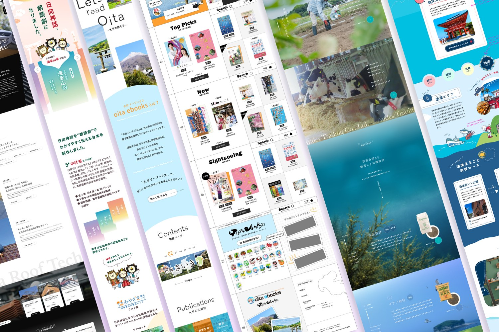
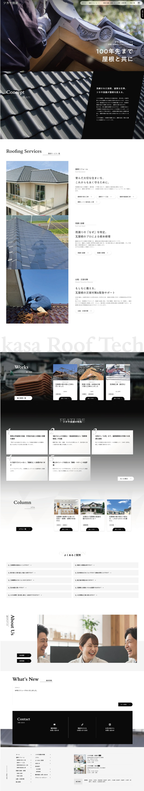
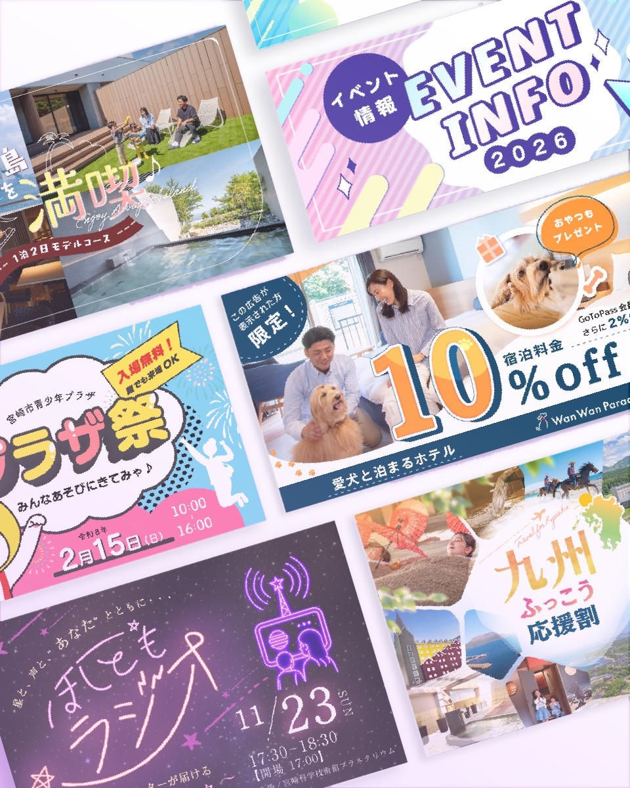
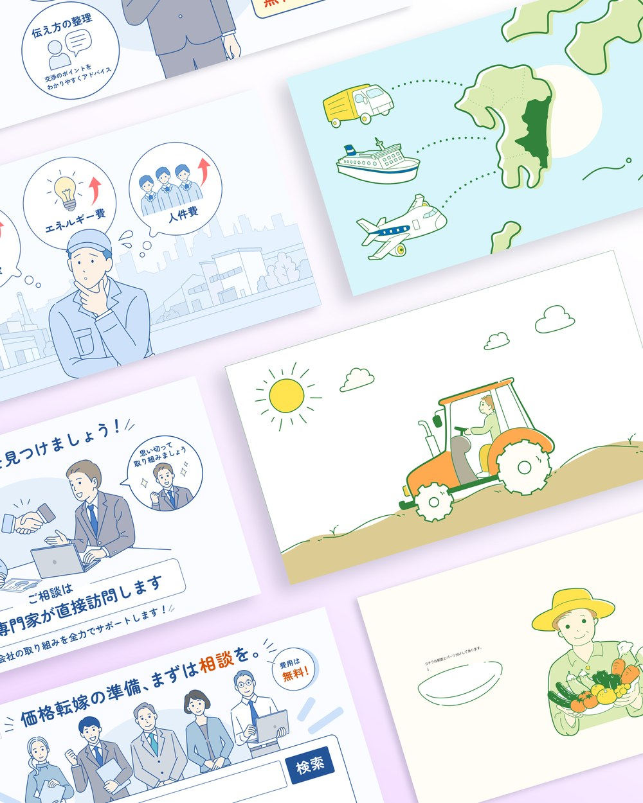

(01) / 04
Web Design
Webデザイン
コーポレートサイトや情報サイトなどのWebデザインです。ページ全体の流れや余白を整え、見る人が迷わず目的の情報にたどり着けるレイアウトを心がけています。
← Back(PROJECT No.02) 2026
04ITEMS /
No.02
(CONTENTS)
(02) — 2026
BANNER / WEB DESIGN
WEBWebデザイン、バナー、動画用イラストのまとめです。ワードプレスとphpを使用してのサイトデザイン、ページ追加のコーディング作業・studioを使用してのデザイン・コーディングまで幅広く行っておりました。

(01) / 04
Webデザイン
コーポレートサイトや情報サイトなどのWebデザインです。ページ全体の流れや余白を整え、見る人が迷わず目的の情報にたどり着けるレイアウトを心がけています。

(02) / 04
屋根工事会社のコーポレートサイト(STUDIO・CMS)
STUDIOで実際に制作・公開した、屋根工事会社のコーポレートサイトです。施工事例・コラム・お知らせにはCMS機能を組み込み、更新しやすい仕組みにしています。デザインからコーディングまで担当しました。

(03) / 04
バナー
Webサイトや広告、SNSで使うバナーです。目を惹くデザインで見つけてもらいやすく、かつ限られたスペースでもひと目で内容が伝わるよう、言葉の大きさと配色のバランスも考えて制作しています。

(04) / 04
動画用イラスト(Illustrator パスイラスト)
動画の素材として使うために、Illustratorのパスで描いたイラストです。どのように使用するかを相談し合いながら、パーツを分けて描いています。